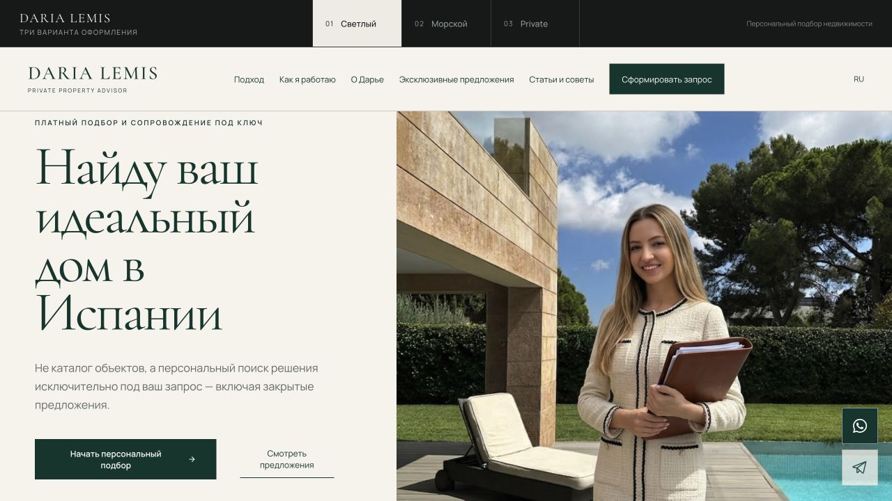
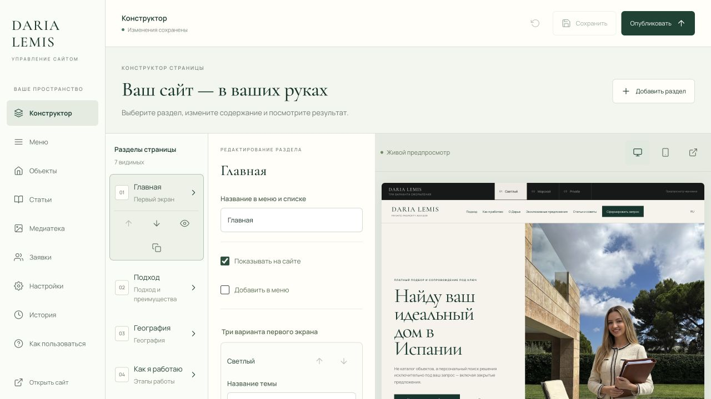

01Сайт с подключённым управлением
Сайт «Светлый»

Главная, персональный подбор, эксклюзивные предложения и статьи. Это действующая версия раннего светлого направления, которую можно редактировать в личном кабинете.
Открыть сайт ↗
Открывается без пароля.
02Управление этим сайтом
Личный кабинет

Тексты, фотографии, порядок и видимость разделов, объекты, статьи и заявки — в одном кабинете. Справа в редакторе виден предпросмотр сайта.
Войти в кабинет ↗
Для входа нужен существующий пароль. Нажмите на изображение, чтобы рассмотреть кабинет без входа.